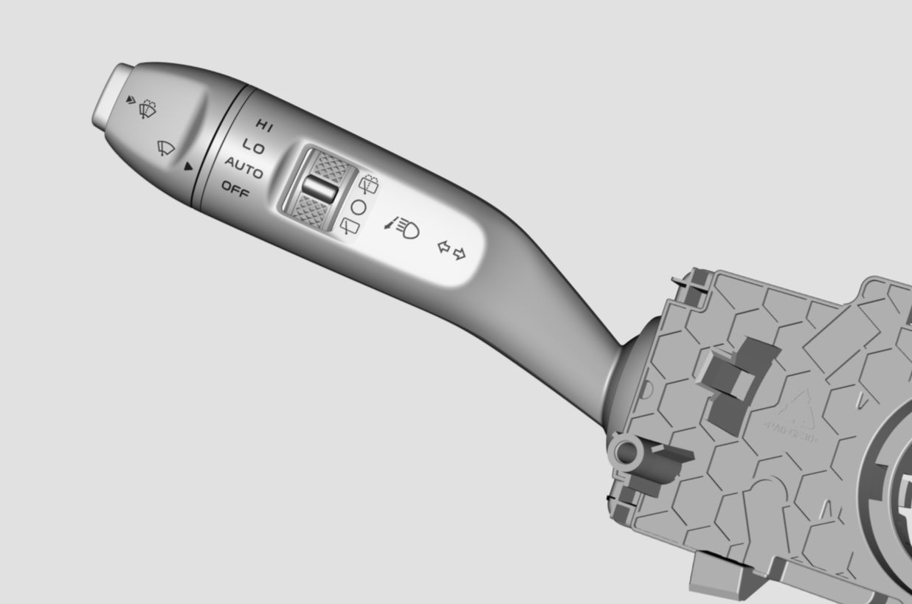
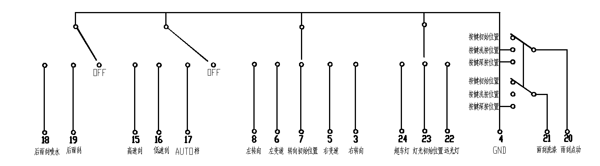
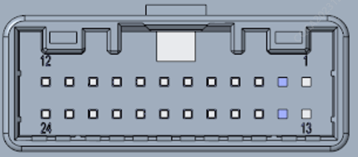

功能结构

怀档开关控制灯光部分在转向柱的左侧。在电源挡位为ON档时，向上轻拨动一档，开关自复位，右变道灯闪烁3次：向上深拨动到第二档，开关自复位，右转向灯闪亮，待方向盘回位后，转向灯熄灭；向下轻拨动一档，开关自复位，左变道灯闪烁3次：向下深拨动到第二档，开关自复位，左转向灯闪亮，待方向盘回位后，转向灯熄灭。
当电源档位为ON档位置时，向前拨动控制杆（方向盘方向），远光灯闪亮。向后拨动控制杆（方向盘方向），近光灯闪亮
原理图及PIN脚定义


| PIN脚 | 功能 | 输入/输出 | 信号类型 |
| 1 | N/A | N/A | N/A |
| 2 | N/A | N/A | N/A |
| 3 | 右转向 | 输出 | 低电平有效 |
| 4 | GND | GND | |
| 5 | 右变道 | 输出 | 低电平有效 |
| 6 | 左变道 | 输出 | 低电平有效 |
| 7 | 转向初始位置 | 输出 | 低电平有效 |
| 8 | 左转向 | 输出 | 低电平有效 |
| 9 | N/A | N/A | N/A |
| 10 | N/A | N/A | N/A |
| 11 | N/A | N/A | N/A |
| 12 | N/A | N/A | N/A |
| 13 | N/A | N/A | N/A |
| 14 | N/A | N/A | N/A |
| 15 | 高速刮 | 输出 | 低电平有效 |
| 16 | 低速刮 | 输出 | 低电平有效 |
| 17 | AUTO档/INT档 | 输出 | 低电平有效 |
| 18 | 后雨刮喷水 | 输出 | 低电平有效 |
| 19 | 后雨刮 | 输出 | 低电平有效 |
| 20 | 雨刮点动 | 输出 | 低电平有效 |
| 21 | 雨刮洗涤 | 输出 | 低电平有效 |
| 22 | 远光灯 | 输出 | 低电平有效 |
| 23 | 灯光初始档 | 输出 | 低电平有效 |
| 24 | 超车灯 | 输出 | 低电平有效 |